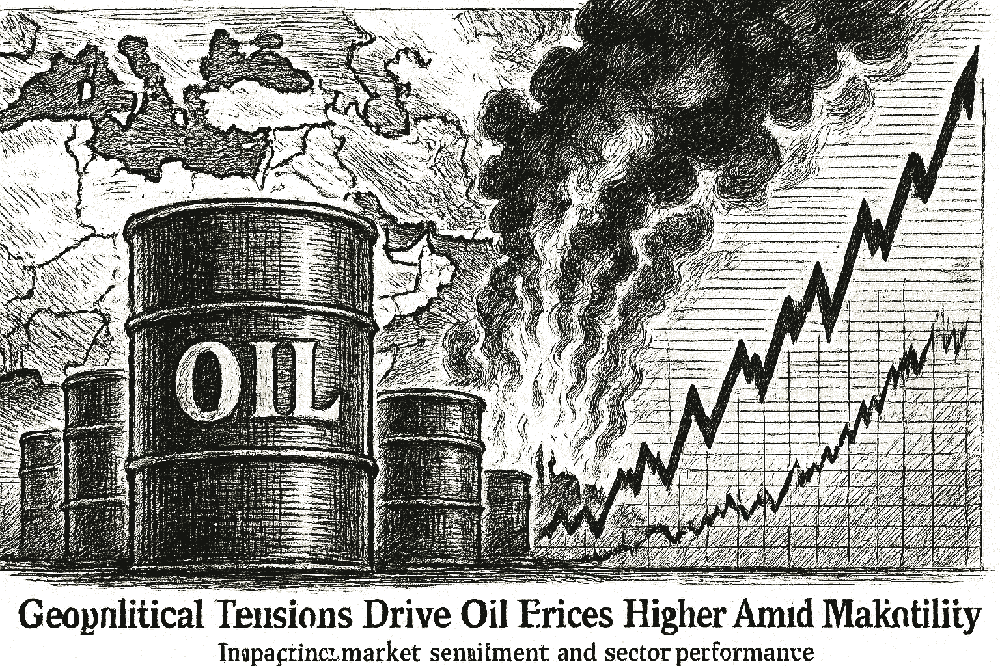

SPY
Current: $766.57Change: -0.48 (-0.06%)
Updated:
Source: yahoo_chartFreshness: fresh


Oil prices are surging as tensions escalate in the Middle East, impacting market sentiment and sector performance.

Today's Headline: Geopolitical Tensions Drive Oil Prices Higher Amid Market Volatility
Setup: Oil prices are surging as tensions escalate in the Middle East, impacting market sentiment and sector performance.
Primary Topic: Oil Prices
Specific Development: Brent crude has risen significantly due to renewed hostilities in the Middle East, with prices nearing $100 per barrel.
Why Today Is Different: This surge in oil prices is occurring alongside a broader market decline, particularly affecting major indices like the Dow and S&P 500.
Secondary Topics: Geopolitical Tensions; Market Volatility; Sector Performance
Tone: cautious
Sectors: Energy; Utilities; Consumer Discretionary
Companies: TSLA; NVDA; AVGO
Commodities: Brent; WTI; Gold
Countries Or Regions: Middle East; United States
Macro Themes: Inflation; Economic Growth
Why This Story: The interplay between rising oil prices and market volatility could signal shifts in investor sentiment and trading strategies.
Why This Matters: Dow, S&P 500, Nasdaq Futures Slide As Iran Conflict Sends Oil Back Toward $100: TSLA, NVDA, ORCL, INTC is the clearest current evidence-led frame for Joshua's observation-only review; missing facts remain explicit intelligence gaps.

Summary: Global markets are reacting to rising oil prices and geopolitical tensions, with major indices showing mixed performance.
What Happened Overnight: Oil prices surged, driven by escalating tensions in the Middle East, while U.S. equities showed signs of weakness.
What Changed Materially: Brent crude prices have increased significantly, impacting market sentiment.
Which Assets Sectors Are Affected: Energy sector is benefiting from rising oil prices, while Consumer Discretionary and Technology sectors are under pressure.
Does It Look Like Noise Or A Real Regime Input: This appears to be a real regime input due to the geopolitical context.
Why This Matters: Joshua can use verified cross-asset moves and deterministic risk context while keeping causation explicitly unresolved.

No high-priority earnings expectation block is supported by the current canonical snapshot.

- WOPR learning pipeline: Learning present — untrusted
- Candidates evaluated 24h: 0
- Current gate: Learning trust
- Notification ledger events in 24h: 8
- Pending orders created/canceled/filled/expired: 3/1/0/0
- Pending lifecycle interpretation: Pending-order cancellations have trackable reasons and no obvious rapid churn pattern.
- Portfolio risk: Label: High / Score: 91.8
- Latest intelligence gap report: intelligence_gap_report_2026-09-06.pdf
Why This Matters: The active gate is Learning trust, so the key question is why candidates are stopping before approval, not how to force trades.

- Sentinel role: infrastructure and operational status only.
- State: ONLINE
- Last successful validation: 2026-09-08T14:12:41.030240+00:00
- Payloads accepted/rejected: 17845/0
- Node health score: 100
Why This Matters: Sentinel is ONLINE, so Joshua should use its context only to the extent the latest accepted pulse is fresh and authenticated.

CANDIDATES MOVING THROUGH JOSHUA'S INVESTMENT-REVIEW WORKFLOW
FROZEN DAILY BRIEF SNAPSHOT | 2026-09-08T14:15:06.917885+00:00
QUEUE SUMMARY | Investment Ready: 0 | Waiting for Price: 0 | Waiting for Evidence: 3 | Research Underway: 2 | Governance Hold: 3 | Monitor Only: 0
Investment-ready status: No candidates are currently Investment Ready.
#4 NVDA - Waiting for Evidence [NEW]
Joshua's Thesis: Positive thesis not yet established.
Why Waiting: Positioning gate failed.
Price: 228.45 now; 225.05 preferred entry
What Unlocks It: Clear valuation support; Evidence that the business quality matches the risk being taken; Independent evidence streams pointing the same way
Portfolio Fit: 61.0/100 — HIGH
Portfolio Fit Drivers: projected Technology exposure 40.1%; projected AI infrastructure exposure 40.1%; candidate amount $100 vs $149 currently allocated
Candidate Risk: 31.0/100 — LOW
Risk Drivers: projected Technology exposure 40.1%; projected AI infrastructure exposure 40.1%; candidate amount $100 vs $149 currently allocated
Next: Positioning status must no longer be warning. Owner: Joshua.
#6 AVGO - Research Underway [Moved Up 7->6]
Joshua's Thesis: Positive thesis not yet established.
Why Waiting: Research evidence is still being gathered.
Price: 367.20 now; 370.11 preferred entry
What Unlocks It: Clear valuation support; Evidence that the business quality matches the risk being taken; Independent evidence streams pointing the same way
Portfolio Fit: 61.0/100 — HIGH ↑
Portfolio Fit Drivers: projected Technology exposure 40.1%; projected AI infrastructure exposure 40.1%; candidate amount $100 vs $149 currently allocated
Candidate Risk: 31.0/100 — LOW ↓
Risk Drivers: projected Technology exposure 40.1%; projected AI infrastructure exposure 40.1%; candidate amount $100 vs $149 currently allocated
Next: Fill before expires_at while entry conditions remain valid. Owner: Columbo.
#9 PLTR - Governance Hold [Moved Up 14->9]
Joshua's Thesis: Positive thesis not yet established.
Why Waiting: Governance gate has not cleared.
Price: 172.23 now; 177.27 preferred entry
What Unlocks It: Governance gate clears; Clear valuation support; Evidence that the business quality matches the risk being taken
Portfolio Fit: 61.0/100 — HIGH ↑
Portfolio Fit Drivers: projected Technology exposure 40.1%; projected AI software exposure 40.1%; candidate amount $100 vs $149 currently allocated
Candidate Risk: 31.0/100 — LOW ↓
Risk Drivers: projected Technology exposure 40.1%; projected AI software exposure 40.1%; candidate amount $100 vs $149 currently allocated
Next: Re-evaluate after the recorded gate clears. Owner: Columbo.
#12 DIA - Research Underway [Moved Down 9->12]
Joshua's Thesis: Positive thesis not yet established.
Why Waiting: Research evidence is still being gathered.
Price: Current price unavailable.; Preferred entry not established.
What Unlocks It: Clear valuation support; Evidence that the business quality matches the risk being taken; Independent evidence streams pointing the same way
Portfolio Fit: 61.0/100 — HIGH ↓
Portfolio Fit Drivers: projected ETF exposure 40.1%; projected Broad market exposure 40.1%; candidate amount $100 vs $149 currently allocated
Candidate Risk: 31.0/100 — LOW ↑
Risk Drivers: projected ETF exposure 40.1%; projected Broad market exposure 40.1%; candidate amount $100 vs $149 currently allocated
Next: Clear valuation support; Evidence that the business quality matches the risk being taken; Independent evidence streams pointing the same way. Owner: Columbo.
#16 QBTS - Waiting for Evidence [Moved Down 15->16]
Joshua's Thesis: Positive thesis not yet established.
Why Waiting: Waiting for the preferred entry price.
Price: 18.00 now; 20.10 preferred entry
What Unlocks It: Clear valuation support; Evidence that the business quality matches the risk being taken; Independent evidence streams pointing the same way
Portfolio Fit: 0.0/100 — VERY LOW
Portfolio Fit Drivers: projected Unclassified exposure 70.1%; projected Unclassified exposure 70.1%; candidate amount $100 vs $149 currently allocated
Candidate Risk: 100.0/100 — VERY HIGH
Risk Drivers: projected Unclassified exposure 70.1%; projected Unclassified exposure 70.1%; candidate amount $100 vs $149 currently allocated
Next: Fill before expires_at while entry conditions remain valid. Owner: Joshua.
#21 ANGX - Governance Hold [Moved Down 20->21]
Joshua's Thesis: Positive thesis not yet established.
Why Waiting: Governance gate has not cleared.
Price: 4.68 now; 4.50 preferred entry
What Unlocks It: Governance gate clears; Clear valuation support; Evidence that the business quality matches the risk being taken
Portfolio Fit: 0.0/100 — VERY LOW
Portfolio Fit Drivers: projected Unclassified exposure 70.1%; projected Unclassified exposure 70.1%; candidate amount $100 vs $149 currently allocated
Candidate Risk: 100.0/100 — VERY HIGH
Risk Drivers: projected Unclassified exposure 70.1%; projected Unclassified exposure 70.1%; candidate amount $100 vs $149 currently allocated
Next: Re-evaluate after the recorded gate clears. Owner: Advisory Committee.
#22 UUUU - Governance Hold
Joshua's Thesis: Positive thesis not yet established.
Why Waiting: Governance gate has not cleared.
Price: 15.09 now; 14.48 preferred entry
What Unlocks It: Governance gate clears; Clear valuation support; Evidence that the business quality matches the risk being taken
Portfolio Fit: 0.0/100 — VERY LOW
Portfolio Fit Drivers: projected Unclassified exposure 70.1%; projected Unclassified exposure 70.1%; candidate amount $100 vs $149 currently allocated
Candidate Risk: 100.0/100 — VERY HIGH
Risk Drivers: projected Unclassified exposure 70.1%; projected Unclassified exposure 70.1%; candidate amount $100 vs $149 currently allocated
Next: Re-evaluate after the recorded gate clears. Owner: Advisory Committee.
#25 IONQ - Waiting for Evidence [Moved Down 24->25]
Joshua's Thesis: Positive thesis not yet established.
Why Waiting: Evidence quality is insufficient.
Price: 42.72 now; 42.54 preferred entry
What Unlocks It: Clear valuation support; Evidence that the business quality matches the risk being taken; Independent evidence streams pointing the same way
Portfolio Fit: 0.0/100 — VERY LOW
Portfolio Fit Drivers: projected Unclassified exposure 70.1%; projected Unclassified exposure 70.1%; candidate amount $100 vs $149 currently allocated
Candidate Risk: 100.0/100 — VERY HIGH
Risk Drivers: projected Unclassified exposure 70.1%; projected Unclassified exposure 70.1%; candidate amount $100 vs $149 currently allocated
Next: Data confidence must reach at least 34/100. Owner: Joshua.
Observation only. This section creates no recommendation, order, authority, or execution instruction.

- If NVDA reaches the recorded price condition <= 225.05, which recorded evidence and governance requirements would still remain?
- If AVGO reaches the recorded price condition <= 370.11, which recorded evidence and governance requirements would still remain?
- Which recorded governance requirement must clear before PLTR can advance?
- Which recorded missing evidence item would most change Joshua's current view of DIA?

The surge in oil prices due to geopolitical tensions is likely to have a ripple effect across various sectors, particularly Energy and Consumer Discretionary. Investors should remain cautious as market volatility increases.

Compared to: 2026-09-04
- Market weather: Still Balanced
- Top opportunity: Still DELL
- Joshua gate: Evidence -> Learning trust
- 2Y Treasury.last_price: 4.37 -> 4.37 (unchanged); 2Y Treasury.last_price changed 0.00% versus the prior frozen Chronicle snapshot.
- 2Y Treasury.percent_change: 0.6912442396313422 -> 0.6912442396313422 (unchanged); 2Y Treasury.percent_change changed 0.00% versus the prior frozen Chronicle snapshot.
- 10Y Treasury.last_price: 4.78 -> 4.78 (unchanged); 10Y Treasury.last_price changed 0.00% versus the prior frozen Chronicle snapshot.
- 10Y Treasury.percent_change: 0.2096436058700351 -> 0.2096436058700351 (unchanged); 10Y Treasury.percent_change changed 0.00% versus the prior frozen Chronicle snapshot.
- 30Y Treasury.last_price: 5.24 -> 5.24 (unchanged); 30Y Treasury.last_price changed 0.00% versus the prior frozen Chronicle snapshot.
- 30Y Treasury.percent_change: -0.1904761904761864 -> -0.1904761904761864 (unchanged); 30Y Treasury.percent_change changed 0.00% versus the prior frozen Chronicle snapshot.
- SPY.last_price: 766.84 -> 766.57 (down); SPY.last_price changed 0.04% versus the prior frozen Chronicle snapshot.
- SPY.percent_change: -0.02737761554004598 -> -0.06257740694868712 (down); SPY.percent_change changed 128.57% versus the prior frozen Chronicle snapshot.
- QQQ.last_price: 716.97 -> 716.9 (down); QQQ.last_price changed 0.01% versus the prior frozen Chronicle snapshot.
- QQQ.percent_change: 0.02929850996149846 -> 0.01953233997432702 (down); QQQ.percent_change changed 33.33% versus the prior frozen Chronicle snapshot.
- IWM.last_price: 294.74 -> 294.84 (up); IWM.last_price changed 0.03% versus the prior frozen Chronicle snapshot.
- IWM.percent_change: 0.2755758173714838 -> 0.30959752321980344 (up); IWM.percent_change changed 12.35% versus the prior frozen Chronicle snapshot.

The significant rise in oil prices amid geopolitical tensions suggests a potential shift in market dynamics that could impact investment strategies.
No new warnings have been issued since the last brief.
Portfolio Construction Review
Current allocation: 149.49 allocated.
Largest sector: Unclassified at 50.1%.
Largest theme: Unclassified at 50.1%.
Diversification: Mixed (49.9).
Cash allocation: 85.1% unallocated.
Recommended exposure: DELL at portfolio-fit score 61.0.
Portfolio fit: DELL has a mixed portfolio fit; the diversification improvement is not decisive yet.
Why This Matters: Portfolio Manager evaluates whether an opportunity improves this portfolio; it does not select the investment, vote, or authorize execution.

Monitor how geopolitical developments affect oil prices and sector performance today.

| Can trigger trade | no |
| Can modify trade rules | no |
| Can add watch items | yes |
| Can add review questions | yes |
| Can adjust confidence notes | yes |
| Input policy | external_intelligence_plus_sanitized_internal_observations |
| External policy | The Editor-in-Chief synthesizes current world/market context where available and labels unknowns; provider/model provenance remains separate. |
| Internal policy | Joshua/WOPR/Sentinel facts are supplied as sanitized observation-only summaries. |
| Editorial model | gpt-4o-mini |
- Selected by a deterministic daily rotation through symbols already present in the persisted Chronicle snapshot.
- Related event on the canonical wire: Dow, S&P 500, Nasdaq Futures Slide As Iran Conflict Sends Oil Back Toward $100: TSLA, NVDA, ORCL, INTC, BIDU, BABA, BE In Focus
- OPEC+ keeps oil output policy unchanged for October - Reuters
- Desk: commodity; source: Reuters; linked symbols: none recorded.
- Published: 9/6/26 05:03 MST.
- High-impact watch: Advance Monthly Sales for Retail and Food Services - 9/16/26 05:30 MST.
- Affected assets: US equities, Treasuries, USD; source: census_release_schedule.
- FDX earnings: September 16, 2026, time unknown.
- Utilities: 2.90% session performance; source: persisted sector ledger.
- Energy: 1.84% session performance; source: persisted sector ledger.
- Technology: 0.49% session performance; source: persisted sector ledger.
- BRENT: 2.65% recorded move; price: 98.16.
- Session: open; catalyst status: possible; source: yahoo_chart.
- Geopolitical Developments; why it matters: Escalating tensions could lead to increased market volatility.
- State: weakening; score: 34.30/100; advance/decline ratio: 0.49.
- Above 50-day average: 54.60%; sample: 119; provider: sentinel_sampled_breadth.
- Decision outcomes evaluated: 16; currently untestable: 0.
- Warning review: unknown 3; confidence calibration: insufficient_sample.
- Current macro regime: defensive_rotation; change probability: unavailable.
- Risk dashboard: neutral (54/100); breadth: weakening; sentiment: neutral.
- Scenario board only - a current-state observation, not a forecast or execution instruction.

- Founded Bridgewater Associates and popularized systematic macro analysis, risk parity, and explicit decision principles.
- Published quotation: "He who lives by the crystal ball will eat shattered glass."
- Published framework: Translate economic cause-and-effect relationships into explicit rules, diversify across independent return drivers, balance rather than merely add risk, and stress-test decisions against different environments.
- Committee lens: Dalio asks Joshua to model the system, diversify evidence and exposures, and test a proposal across inflation, growth, liquidity, and policy regimes.
- Public philosophy profile only; no participation, endorsement, or current recommendation is implied.
- Which recorded governance requirement must clear before PLTR can advance?
- DELL: No canonical symbol-specific material event is linked.
- Attach the missing DELL evidence before the next committee review.
- Define evidence that would confirm or retire each unresolved warning before the next review window.
- If NVDA reaches the recorded price condition <= 225.05, which recorded evidence and governance requirements would still remain?
- If AVGO reaches the recorded price condition <= 370.11, which recorded evidence and governance requirements would still remain?
- Which recorded governance requirement must clear before PLTR can advance?
- Which recorded missing evidence item would most change Joshua's current view of DIA?
- Evidence agenda: DELL - No canonical symbol-specific material event is linked.
- Proposed review: Oil Price Movements; why it matters: Rising oil prices can impact inflation and economic growth forecasts.
- Proposed review: Equity Performance; why it matters: Mixed performance in equities could signal sector rotation.
- Canonical instruments reviewed: 24; delayed 3, fresh 18, stale 3.
- Leading sources: yahoo_chart (21), treasury_official_yield_curve (3).
- Snapshot recorded: 9/8/26 07:15 MST.
Geopolitical Tensions Drive Oil Prices Higher Amid Market Volatility
Storm meter: Elevated
#4 NVDA - Waiting for Evidence [NEW]
Observation mode: observation_only
Watch: Oil Price Movements; why it matters: Rising oil prices can impact inflation and economic growth forecasts.
Question: If NVDA reaches the recorded price condition <= 225.05, which recorded evidence and governance requirements would still remain?